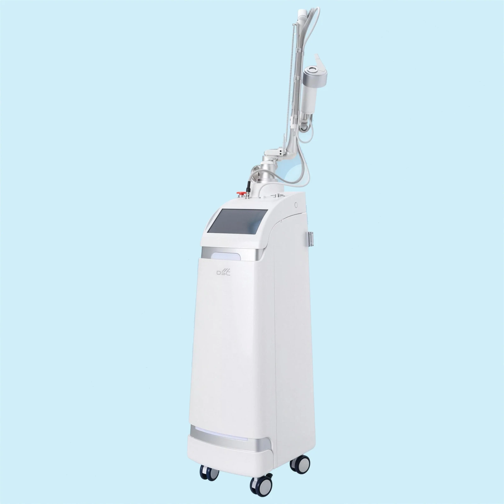
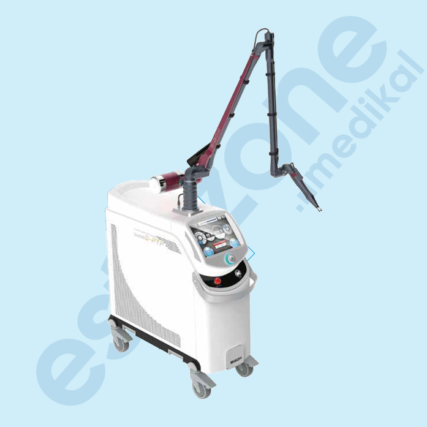
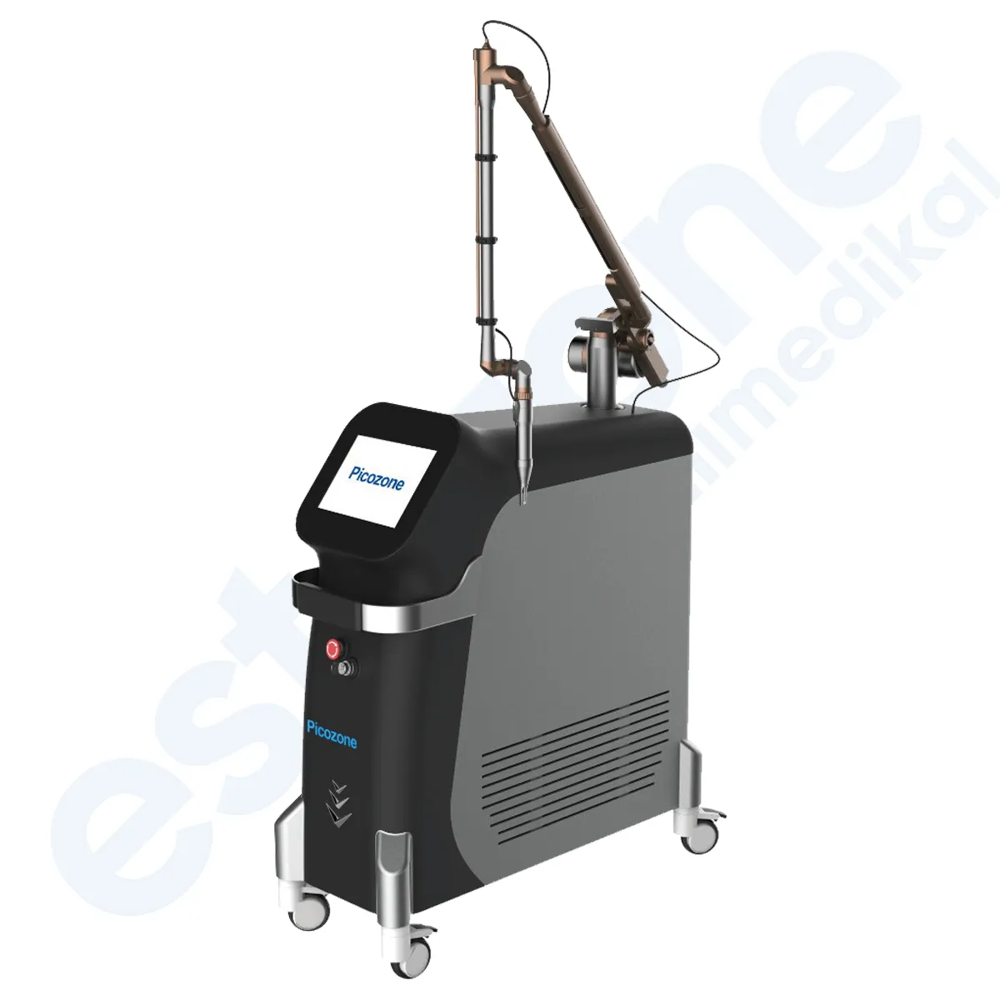
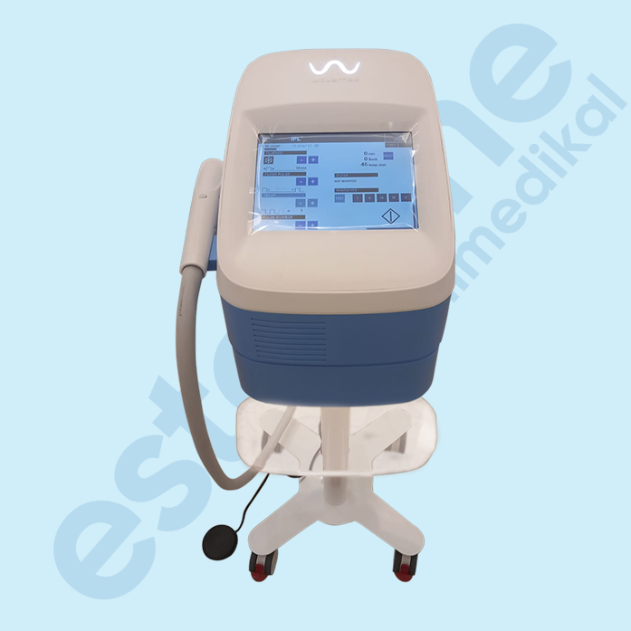
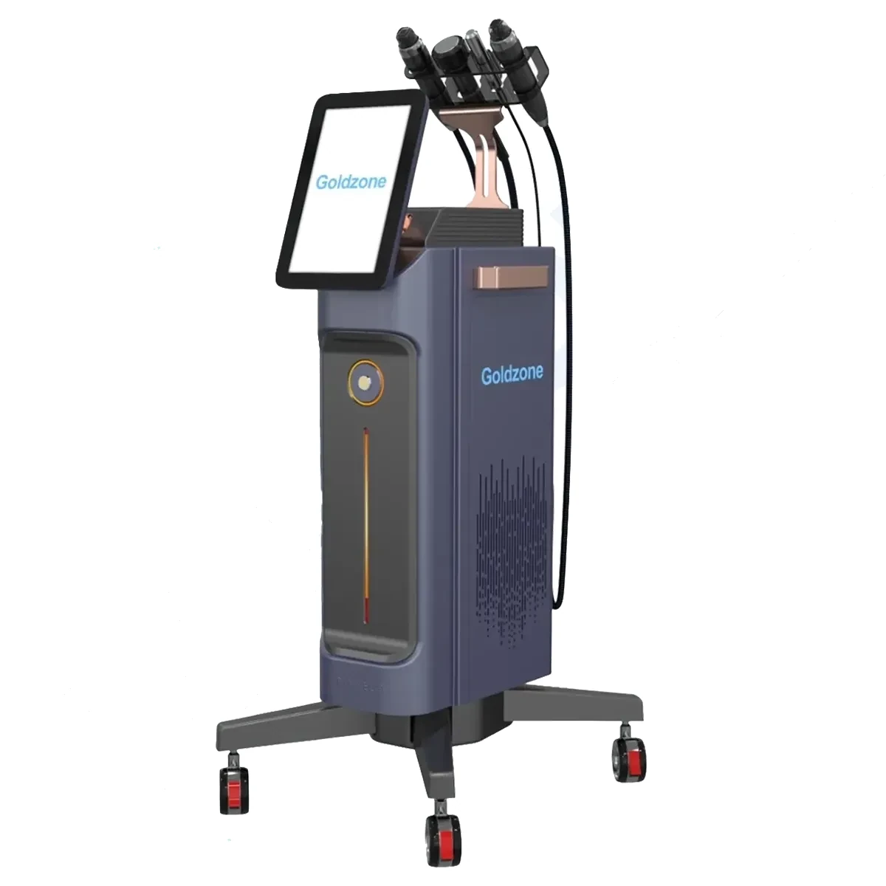
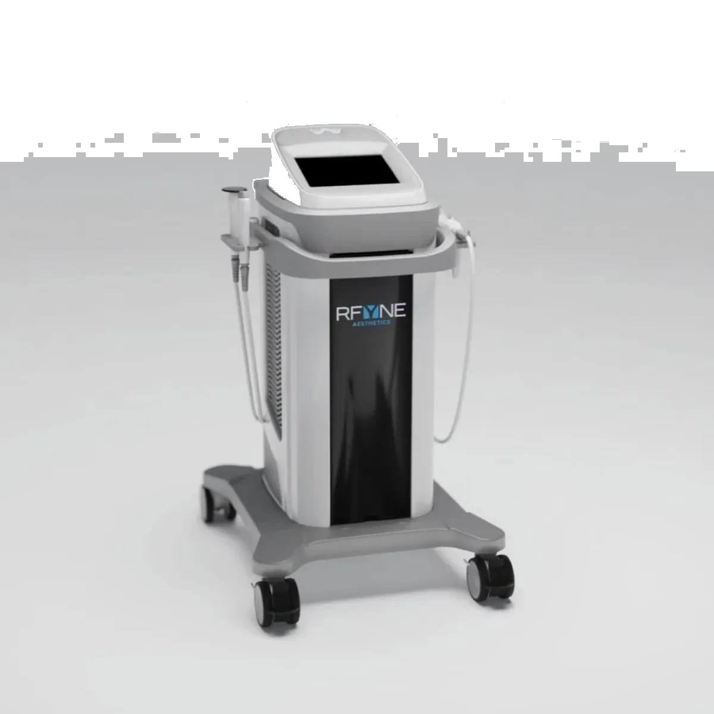
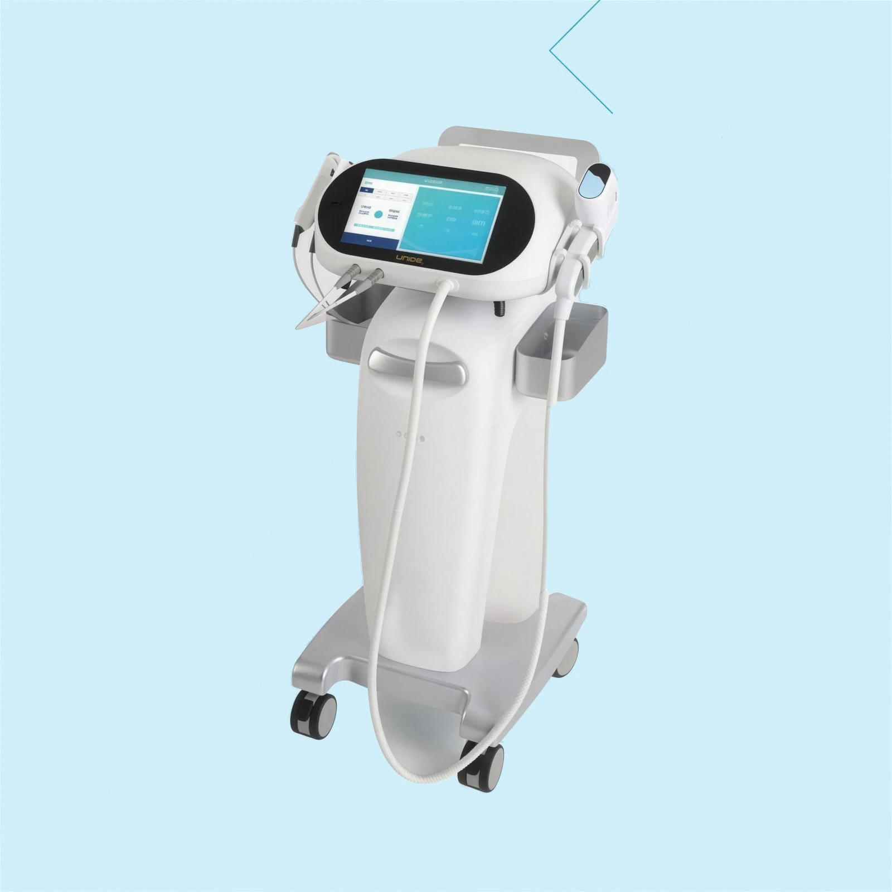
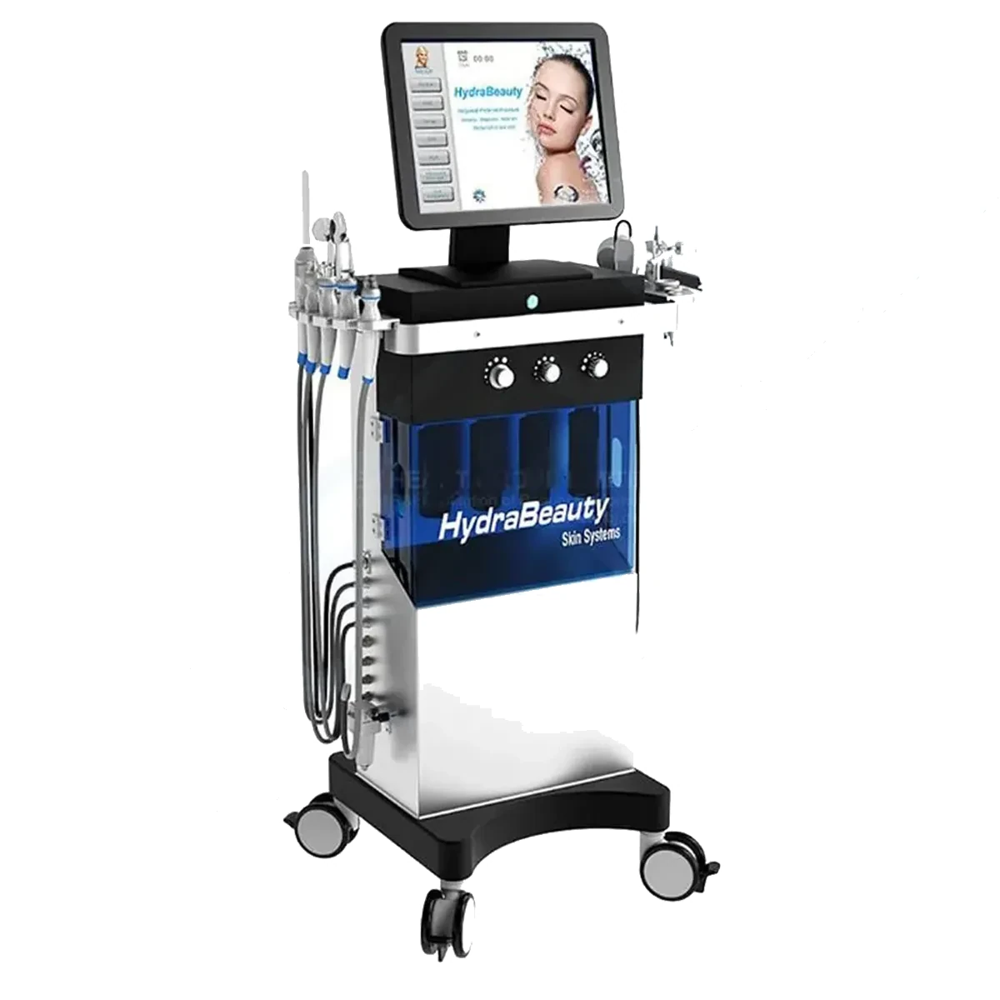
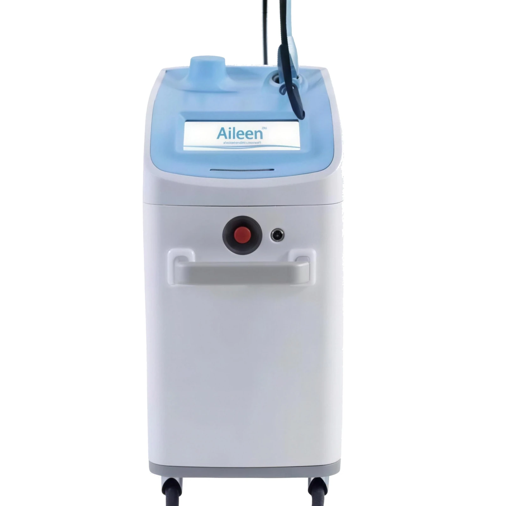

Cilt & Medikal Estetik
Fraksiyonel CO2, pikosaniye, BBL, HIFU ve altın iğne teknolojileriyle leke, doku ve gençleştirme protokolleri.

Cotra Plus CO2
10.600 nm · 50 WCerrahi, zoom, fraksiyonel ve kozmetik modlarıyla tek cihazda dört ayrı tedavi hattı açar.

Lucid Q-PTP
1064 / 532 nmPTP teknolojisiyle enerjiyi iki darbede ileterek yüksek etkinliği düşük cilt hasarı riskiyle birleştirir.

PicoZone
750 ps DarbePikosaniye darbe genişliği pigmenti geleneksel Q-switched lazerden çok daha küçük parçalara ayırır; seans sayısı düşer.

Modula BBL
100.000 Atış LambaEstetik ve medikal ayrı fluens seviyeleri, 100.000 atışlık lamba ömrüyle sarf maliyetini öngörülebilir kılar.

GoldZone
RF Mikro İğnelemeVakum desteği iğnelerin cilt altına daha az ağrıyla ulaşmasını sağlar; fraksiyonel ve mikro iğneleme başlıkları birlikte gelir.

RFYNE
Yeni Nesil RFRadyofrekans altın iğne teknolojisinde İtalyan tasarımı ve yeni nesil başlık mimarisi.

UTIMS Centerless
Centerless KartuşCenterless kartuş mimarisi ile odaklı ultrasonu daha homojen dağıtır; cilt sıkılaştırma ve yüz germede cerrahisiz alternatif.

HydraBeauty
9-in-1 BakımDokuz farklı başlık tek gövdede; bakım menüsünü tek yatırımla kurmak isteyen işletmeler için giriş noktası.

Aileen
1064 nm Nd:YAG0,3 ms darbe genişliğiyle Genesis tekniği; tüm cilt tiplerinde acısız ve etkili uygulama.
Lazer Epilasyon
Alexandrite, Diode ve Nd:YAG platformlarında, yüksek seans hacmine dayanacak profesyonel epilasyon sistemleri.
DİĞER HATVücut & Zayıflama
Soğuk lipoliz, HI-EMT kas uyarımı, radyofrekans ve endolazer ile bölgesel incelme ve kontur protokolleri.
DİĞER HATSoğutma & Aksesuar
Uygulama konforunu ve hasta güvenliğini yükselten soğutma sistemleri ile dalga boyuna özel koruyucu ekipman.
Cilt & Medikal hattında doğru cihazı birlikte seçelim
Hedef hasta profilinizi ve günlük seans hacminizi paylaşın; bu hattaki hangi platformun size uyduğunu net söyleyelim.
Ankara ve İstanbul ofislerimizden aynı gün dönüş yapılır.